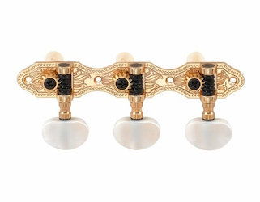
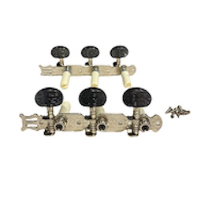
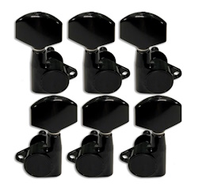
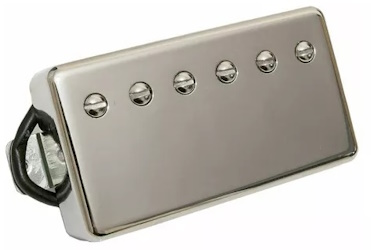
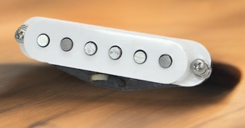

Clavijero típico con clavijas blancas para guitarra clasica.

Una particularidad estética que no hace al sonido pero si a la personalización de tu guitarra

De aspecto crudo y sombrío, las mas elegidas por los rockeros aunque son aptas para todos.

Clasicos humbucker, de sonido amplio y reductores de ruidos.

Clasicos humbucker, de sonido amplio y reductores de ruidos con cobertor.

Single coil blanco de sonido con mucho ataque popularizdo por artistas como Blackmore, Hendrix, Clapton, Malmsteen, Frusciante.